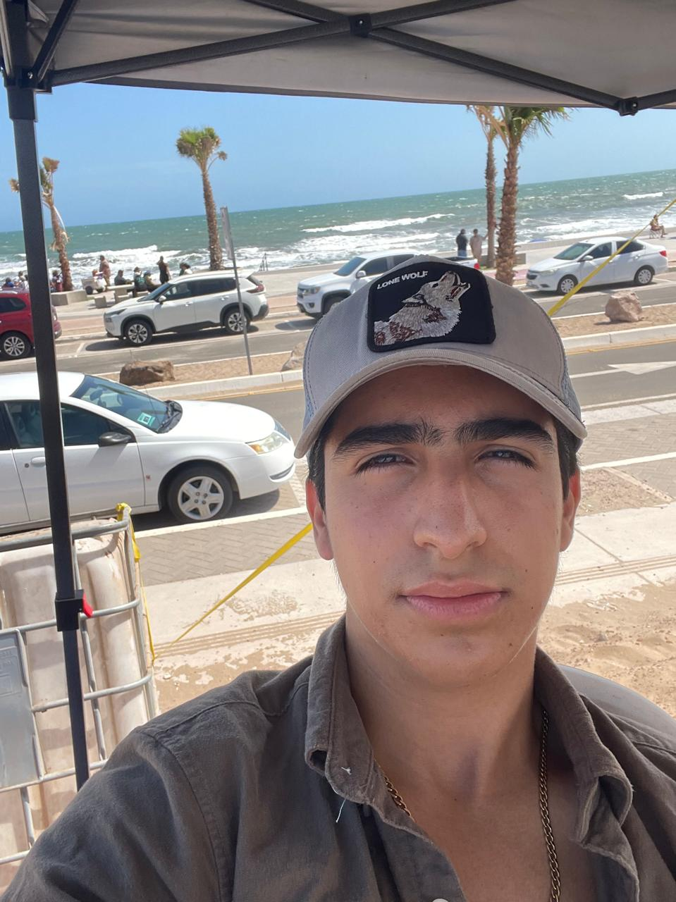

Alejandro Valdez Hermosillo
Correo Electronico: janovaldezhillo@gmail.com
autobiografia
Naci en Cd Obregon el 16 Mayo del 2005, estudie la primaria en la escuela Lic. Luis Encinas, la Secundaria y preparatoria en el Instituto La Salle. En la preparatoria estuve en el selectivo de futbol y me especialize en el area de fisico-matematico.
Actualmente estoy cursando el quinto semestre de Ingenieria de Software en el Instituto Tecnologico de Sonora, y durante el verano de este año 2025 desarrolle un software para la empresa de CFMOTO Obregon-Navojoa con el lenguaje de programacion de java y como base de datos mysql.
Me apasionan las redes informaticas, soy aprendiz del sistema operativo kali-linux y me gustaria especializarme en el area de hacking etico.
Experiencia Laboral
Durante el verano del 2025 desarrolle un sistema de gestion de servicios de vehiculos para la empresa de CFMOTO Obregon-Navojoa la cual se llamo "CFMOTO CONTROL", en la cual trabaje utilizando Java SE como lenguaje de programacion, JasperReport para reportes pdf y mysql como base de datos de la aplicacion, ademas utilice redes para que varias computadoras se conectaran en la aplicacion a un servidor de bases de datos tanto en red local y en internet.
Despues de ese projecto, trabajo en la empresa como asesor de ventas y marketing.
Educacion
Estudie la primaria en la Primaria Lic. Luis Encinas donde sembre las habilidades sociales de las que gozo hoy, la Secundaria y Prepa en el Instituto La Salle Obregon en donde me hice de las amistades que gozo hoy en dia y construi las bases de los conocimientos que tengo hoy en dia.
Idiomas
- Español
- Ingles B2 III